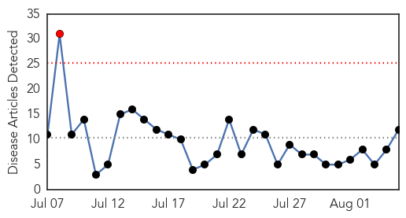
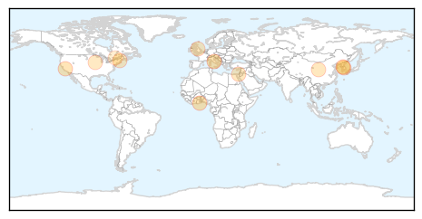

Influenza
30-Day Web Trend
1 alerts, 0 warnings

30-Day Twitter Trend
0 alerts, 0 warnings

Article Locations
Article Confidences

Top Articles:
- 0.970
- Hong Kong tells South Korea city's summer flu season is over in hope travel warning will be dropped
- 0.932
- Traders fight gov’t over bird flu
- 0.920
- Traders Fight Govt Over Bird Flu – Daily Guide Ghana
- 0.844
- California warns about Valley fever in August
- 0.751
- August 5, 2015 Archives
- 0.751
- August 5, 2015 Archives
- 0.751
- August 4, 2015 Archives
- 0.751
- August 4, 2015 Archives
- 0.751
- August 4, 2015 Archives
- 0.751
- August 4, 2015 Archives
- 0.711
- Iowa lifts most bird flu quarantine zones
- 0.547
- Kennel cough cases reported, vets say no outbreak
Top Tweets:
- 0.899
- Swine/Variant Influenza (Flu) http://t.co/4T7DRUFdOl
Hepatitis
30-Day Web Trend
4 alerts, 7 warnings

30-Day Twitter Trend
1 alerts, 0 warnings

Article Locations

Article Confidences

Top Articles:
-
No articles found for Aug 05, 2015
Top Tweets:
-
No tweets found for Aug 05, 2015